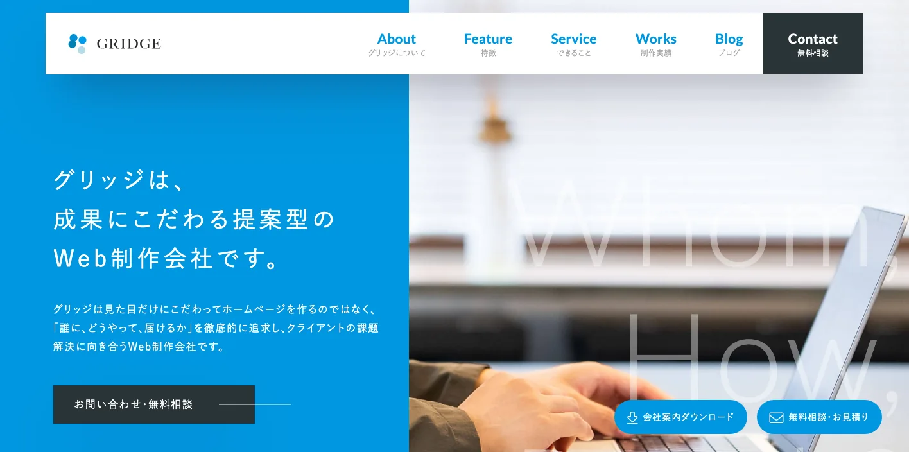
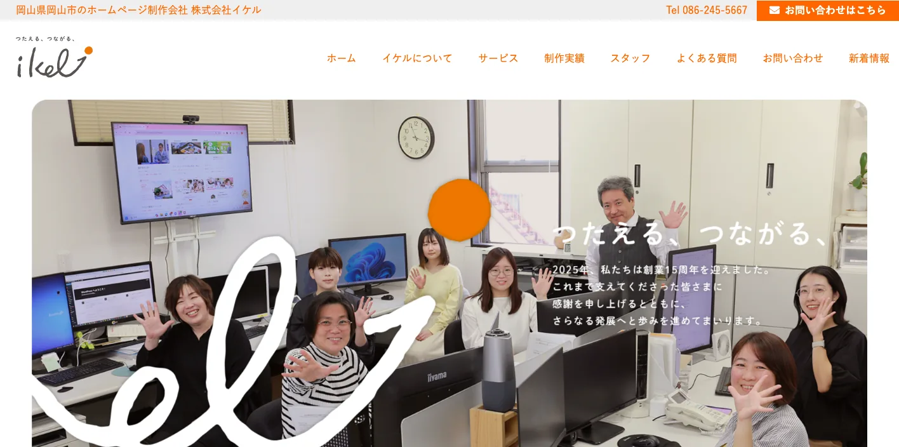
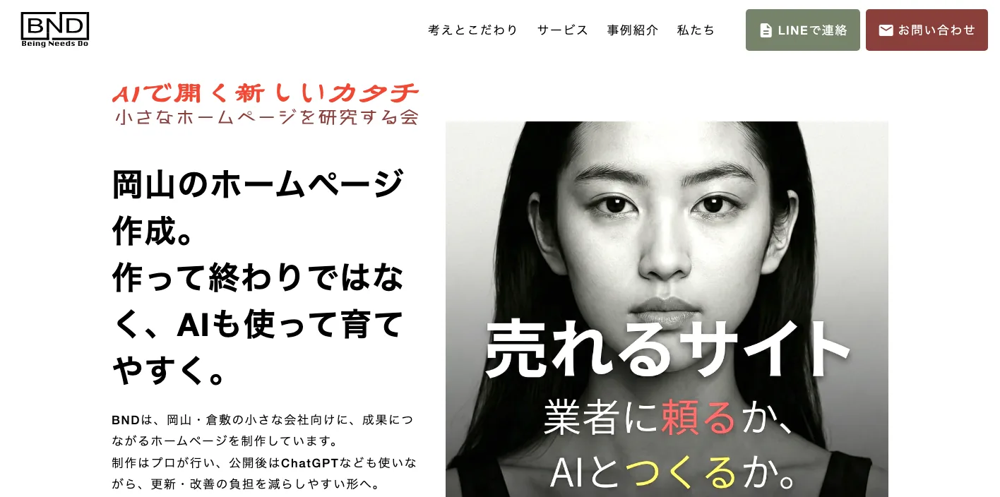
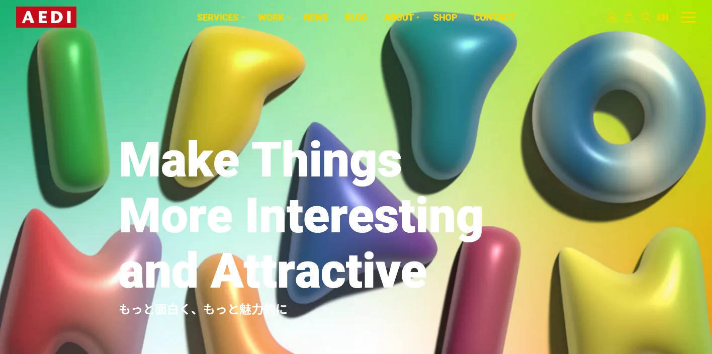
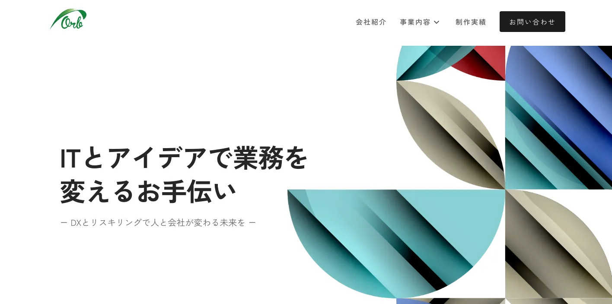
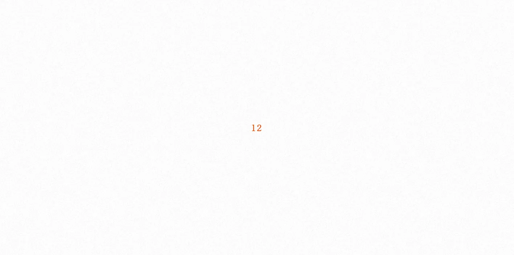
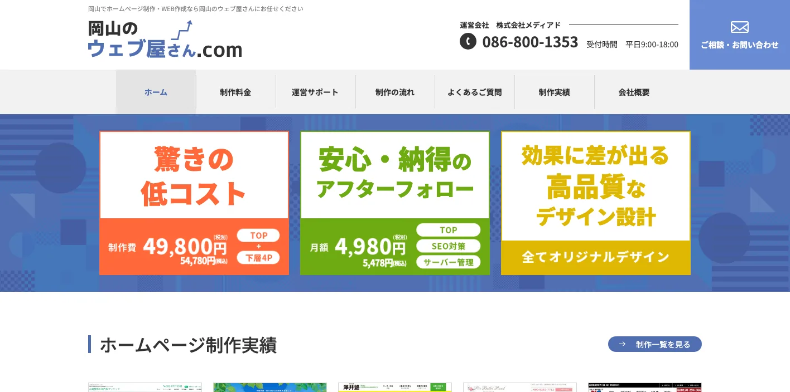
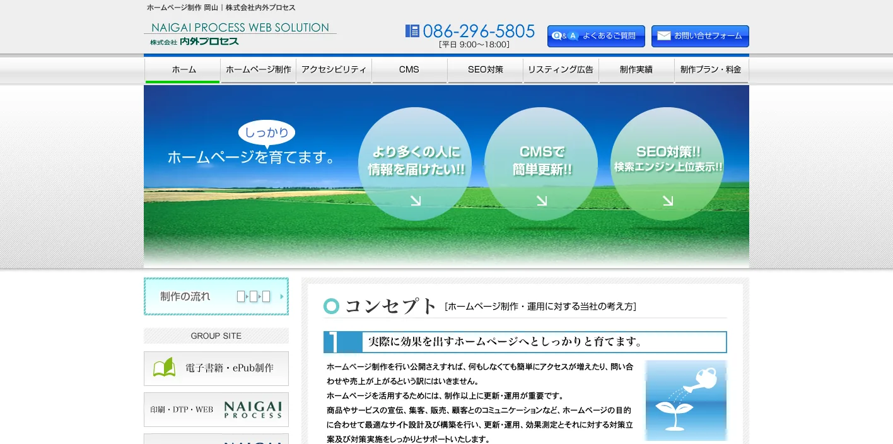
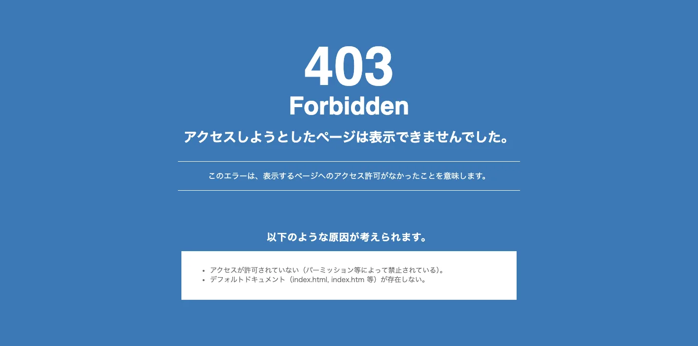
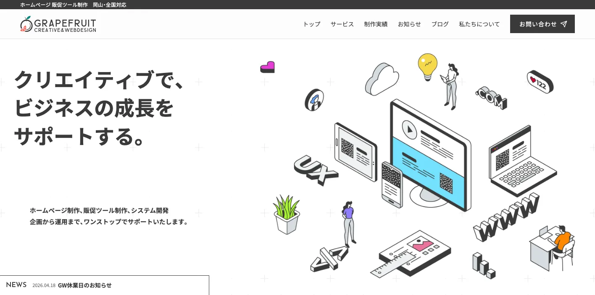

岡山県でおすすめのLLMO会社10選｜費用相場と選び方もわかりやすく解説

岡山県でLLMO会社を選ぶときは、「岡山のホームページ制作会社」だけで探すと判断が荒くなります。岡山市は行政、医療、教育、士業、店舗、BtoB企業が集まり、倉敷市は美観地区と水島臨海工業地帯、児島ジーンズ、瀬戸内観光が重なります。津山、蒜山、美作、笠岡諸島、備前・長船では、観光、食品、製造、移動条件の質問も変わります。
岡山県の人口（令和8年4月1日）では、岡山県推計人口が1,802,787人と公表されています。さらに令和6年岡山県観光客動態調査結果の概要では、観光入込客数が16,260千人、倉敷美観地区が3,078千人、玉野・渋川が2,487千人、蒜山高原が2,150千人、後楽園・岡山城周辺が1,824千人と示されています。人口規模と観光接点の両方を見る必要があります。
また、岡山県の水島臨海工業地帯の概要では、水島工業地帯が岡山県の製造品出荷額等の約半分を占める中核産業であることが示されています。この記事では、岡山県でLLMOに取り組むときに比較したい会社、選び方、費用相場をまとめます。基礎から確認したい方はLLMO対策の基礎記事、隣県商圏を見たい方は鳥取県の記事や島根県の記事も参考にしてください。
目次

岡山県でおすすめのLLMO会社10選
今回は、岡山県内に拠点があり、Web制作、SEO、MEO、Webマーケティング、広告、SNS、ブランディング、写真・映像、システム、運用保守などの公開情報を確認しやすい会社を中心に選びました。岡山県内でLLMO専業を前面に出す会社はまだ多くありません。そのため、AIに引用されやすい情報設計、FAQ、構造化データ、SEO、取材、更新運用まで広げて支援できるかを見ています。
岡山県では、岡山市の生活商圏とBtoB、倉敷・水島の観光と製造、児島・笠岡の瀬戸内観光、津山・蒜山・美作の広域観光、県南から県北までの採用で、AIに聞かれる質問が変わります。まずは下の表で、自社の地域と目的に近い会社を絞ってください。
| 会社名 | 拠点・対応 | 向いている相談 |
|---|---|---|
| 株式会社グリッジ | 岡山市北区 | Web戦略、ホームページ制作、集客、伴走型改善 |
| 株式会社イケル | 岡山市北区 | ホームページ制作、保守運用、採用、グラフィック、IT支援 |
| BND（小さなホームページを研究する会） | 岡山市北区 | 小規模事業者向けWeb制作、AI活用、運営内製化、SEO |
| AEDI株式会社 | 倉敷市 | Web制作、UI/UX、EC、多言語、ブランディング、グラフィック |
| 株式会社Orb | 倉敷市 | ホームページ/EC制作、DX、デジタルマーケティング、IT導入 |
| HONE DESIGN | 倉敷市 | Web、グラフィック、映像、ブランディング、SEO/MEO伴走 |
| 岡山のウェブ屋さん（株式会社メディアド） | 岡山市 | 低コストWeb制作、地域密着、アフターフォロー |
| 株式会社内外プロセス | 岡山市南区 | ホームページ制作、運用、効果測定、PDCA改善 |
| 株式会社テレパル岡山 | 岡山市北区 | MEO、GBP運用、SNS、Web広告、動画、地域広告 |
| 株式会社グレープフルーツ | 岡山・全国対応 | Web制作、販促ツール、システム開発、企画運用 |
株式会社AIMAは岡山県内の会社ではありませんが、全国対応でLLMO支援を提供しています。月額5万円のLLMO支援は初期費用なし・1ヶ月単位で始められ、質問設計、記事制作、引用チェックに絞って実務を進められます。岡山市、倉敷市、津山市、玉野市、笠岡市、美作市、真庭市のように商圏や観光導線が分かれる場合も、まず無料LLMO診断で優先順位を確認できます。
株式会社グリッジ

株式会社グリッジは、岡山市北区にあるWeb制作会社です。公式サイトでは、成果にこだわる提案型のWeb制作会社として、見た目だけではなく「誰に、どうやって、届けるか」を追求し、Web戦略に精通したディレクターを中心にホームページを制作すると説明しています。
LLMOでは、きれいなサイトを作るだけでは足りません。AIに拾われたい質問を決め、サービス、料金、実績、FAQ、地域名、顧客の悩みをページに落とす必要があります。グリッジはWeb戦略と伴走型の改善を打ち出しているため、岡山市のBtoB企業、士業、医療、住宅、採用サイトで候補になります。
株式会社イケル

株式会社イケルは、岡山市のホームページ制作会社です。公式サイトでは、岡山を中心にホームページ制作・IT支援を行い、コーポレートサイト、リクルートサイト、ECサイト、ランディングページ、eラーニングサイト、グラフィックデザイン、保守サービス、プレスリリース代行などを案内しています。
同社は、制作したホームページの運用サポートにも力を入れていることを示しています。LLMOでは、公開後にFAQ、事例、採用情報、商品情報を更新し続けることが重要です。岡山市周辺の地域企業、医療、教育、採用広報、EC、地域サービスが、更新運用まで相談したい場合に向いています。
BND（小さなホームページを研究する会）

BNDは、岡山市北区を拠点に、小さな会社向けのホームページ制作・改善・講習を提供する事業者です。公式サイトでは、岡山・倉敷の小さな会社向けに、成果につながるホームページを制作し、公開後はChatGPTなども使いながら更新・改善の負担を減らしやすい形を支援すると説明しています。
LLMOでは、AIを使って自社で情報を整えられる体制も重要になります。BNDはAI活用、Web担当者育成、サイト運営の内製化を前面に出しているため、小規模店舗、個人事業、地域サービス、教室、医療・福祉などが、外注依存を減らしながらLLMOを進めたい場合に合います。
AEDI株式会社

AEDI株式会社は、倉敷市を拠点とするホームページ制作会社・デザイン会社です。公式サイトでは、ホームページ制作、WordPress構築、UI/UXデザイン、ECサイト、多言語サイト、SEO、ブランディング、写真撮影、コピーライティング、グラフィックデザインなど幅広い制作メニューを紹介しています。
倉敷では、美観地区、観光、宿泊、飲食、地場商品、製造業、教育機関など、見せ方と情報の正確さが両方求められます。AEDIはWebとデザイン、ブランド表現を横断しているため、倉敷市周辺の観光、店舗、メーカー、学校、EC、商品ブランドのLLMO設計に向いています。
株式会社Orb

株式会社Orbは、倉敷市のホームページ制作・Web制作会社です。公式サイトでは、システム開発、ホームページ・ECサイト制作、グラフィックデザイン制作、デジタルマーケティング支援、IT導入コンサルティング、イベント管理システムを事業内容に掲げています。
水島や倉敷周辺では、製造業、物流、イベント、EC、業務システムなど、単なるコーポレートサイトでは足りない相談が出やすくなります。OrbはWeb制作とDX、システム、デジタルマーケティングを組み合わせられるため、業務改善やEC、予約、イベント管理まで含めたい会社に向いています。
HONE DESIGN

HONE DESIGNは、倉敷市を拠点に、Web、グラフィック、映像、ブランディング、ディレクション、SEO/MEOの伴走支援を行うクリエイティブスタジオです。公式サイトでは、コーポレートサイト、採用サイト、LP、サービスサイト、ECサイト、コンセプトムービー、会社紹介動画、SNS用ショート動画などを案内しています。
LLMOでは、文章だけでなく、写真、映像、ブランドストーリー、採用コンテンツもAIに理解される材料になります。HONE DESIGNは表現力の高いWebと映像を扱うため、倉敷、児島、瀬戸内エリアの観光、アパレル、飲食、採用、ブランドづくりで候補になります。
岡山のウェブ屋さん（株式会社メディアド）

岡山のウェブ屋さんは、株式会社メディアドが運営するホームページ制作サービスです。公式サイトでは、岡山を中心とした企業、大学、行政機関、店舗、個人事業主向けに、低コスト、高品質なデザイン設計、アフターフォローを特徴としてホームページ制作を案内しています。
小規模事業者がLLMOを始める場合、最初から大きな予算をかけるよりも、公式サイトの基本情報、料金、事例、FAQ、問い合わせ導線を整えることが先です。岡山のウェブ屋さんは低コスト制作を打ち出しているため、岡山市周辺の店舗、教室、士業、建設業、クリニックが最初の土台を作りたい場合に合います。
株式会社内外プロセス

株式会社内外プロセスは、岡山市南区のホームページ制作会社です。公式サイトでは、ホームページは制作して終わりではなく、更新・運用、効果測定、対策立案、対策実施をサポートし、PDCAサイクルを回して実際に効果を出すホームページへ育てる考え方を示しています。
LLMOは、AI回答での見え方を確認しながら、ページやFAQを直し続ける運用型の施策です。内外プロセスは運用と効果測定を重視しているため、既存サイトがある岡山市、倉敷市、玉野市、県南の企業が、更新体制と改善サイクルを整えたい場合に向いています。
株式会社テレパル岡山

株式会社テレパル岡山は、岡山市北区の地域密着型の情報・サービス提供会社です。公式サイトでは、市町村別電話帳、MEO対策、GBP運用代行、SNS運用代行、Web広告、ホームページ制作、Google広告、動画制作、チラシ・DM・ロゴなど幅広い広告・販促サービスを案内しています。
店舗や地域サービスでは、MEOとLLMOを切り離せません。Googleマップの情報、口コミ、写真、営業時間、サービス説明が整っていないと、AI回答でも誤解されやすくなります。テレパル岡山はMEO、GBP、SNS、広告を扱うため、岡山市・倉敷市の店舗、飲食、美容、医療、住宅、地域サービスに向いています。
株式会社グレープフルーツ

株式会社グレープフルーツは、岡山と全国対応で、ホームページ制作、販促ツール制作、システム開発を企画から運用までワンストップで支援する会社です。公式サイトでは、Web制作、LP、採用サイト、ECサイト、既存サイトの修正・カスタマイズ、DTP・販促ツール制作などを案内しています。
LLMOでは、Webページだけでなく、パンフレット、採用資料、商品説明、問い合わせ導線まで内容をそろえる必要があります。グレープフルーツはWebと販促物、システム開発を扱うため、岡山県内の中小企業、製造業、採用サイト、地域ブランドが、紙とWebの情報を統一したい場合に候補になります。
岡山県のLLMO会社を比較する際のポイント
ここでは、会社一覧とは別に、岡山県でLLMO会社を選ぶときの見方を整理します。岡山県は「岡山市だけ」「倉敷観光だけ」で見ると足りません。県南の都市商圏、水島の製造業、児島・笠岡の瀬戸内観光、県北の津山・蒜山・美作では、AIに聞かれる質問がかなり違います。
岡山市は生活サービス、医療、士業、BtoBの質問を分ける
岡山市は県庁所在地で、行政、医療、教育、士業、店舗、住宅、BtoBサービスが集まります。AIに聞かれる質問も「岡山市でおすすめ」だけでなく、「駐車場があるか」「夜間対応できるか」「補助金に詳しいか」「採用しているか」「法人対応できるか」のように細かく分かれます。
この地域では、会社概要、サービス、料金、実績、FAQ、採用情報を整理できる制作会社が合います。サイトの見た目だけでなく、検索される質問に合わせてページを分けられるかを確認してください。特に医療、士業、住宅、教育、BtoBでは、曖昧な表現よりも一次情報の正確さが大切です。
倉敷・水島は観光と製造業を別の言葉で設計する
倉敷市では、美観地区、児島、瀬戸内観光、水島臨海工業地帯が近い距離にあります。ただし、観光客が聞く「倉敷美観地区で何をするか」と、製造業の発注者が聞く「水島でどの加工や保全に対応できるか」はまったく別の質問です。
観光事業者は、アクセス、所要時間、駐車場、雨の日、家族連れ、外国人対応、周辺飲食、宿泊を整理してください。製造業やBtoB企業は、設備、対応範囲、素材、品質管理、認証、納期、事例、問い合わせの流れをWebに出す必要があります。同じ倉敷でも、LLMO会社には情報の分け方を相談しましょう。
水島周辺のBtoBでは、社名を知ってもらうだけでは弱いです。AIは「どの工事に対応できるか」「定修に強いか」「安全管理はどうか」「県外企業から相談できるか」のように、かなり具体的な回答を作ろうとします。実績を出しにくい業種でも、対応領域、保有資格、相談手順、対応エリア、守秘の考え方を公開できれば、AIが比較回答に使える材料が増えます。
児島・玉野・笠岡は瀬戸内の移動と体験条件を整理する
児島、鷲羽山、玉野・渋川、直島方面、笠岡諸島は、瀬戸内観光として見られやすい地域です。AIには「岡山駅から行けるか」「車なしで回れるか」「島へ行く船はあるか」「日帰りできるか」「雨の日はどうするか」「子ども連れで行けるか」といった質問が入りやすくなります。
この地域の観光、宿泊、飲食、体験、物販では、営業時間や料金だけでは不十分です。交通手段、所要時間、予約条件、季節、服装、周辺施設、モデルコース、写真や動画を整えるとAIに拾われやすくなります。制作会社を選ぶときは、観光パンフレットをWebに移すだけでなく、質問形式に変換できるかを見てください。
児島ジーンズのような地場ブランドでは、商品名、素材、サイズ、修理、工房見学、購入場所、EC、ギフト対応まで質問が広がります。笠岡諸島や玉野では、船の時間、港からの移動、悪天候時の対応も重要です。地域名だけでなく、体験前後の不安をFAQ化できる会社を選ぶと、AI回答に使われやすくなります。
津山・蒜山・美作は県北の広域移動と季節性を扱う
津山、蒜山高原、美作、湯郷温泉、真庭、新見では、県南からの移動、季節、宿泊、温泉、自然体験、農産品、食品の質問が増えます。AIは「岡山市から何時間か」「冬に行けるか」「家族連れに向くか」「温泉と観光を一緒に回れるか」のように、条件付きで回答を作ります。
県北の事業者は、地域名と観光地名だけでなく、季節別の注意点、雪や雨、車の必要性、予約、日帰り可否、周辺で食べる場所、地元商品、宿泊との組み合わせを公式サイトに出してください。写真撮影や記事制作だけでなく、更新し続けられる運用体制も重要です。
採用と製造業は技術情報と働く環境を公開する
岡山県では、水島を中心とした製造業、物流、建設、医療福祉、サービス業で採用の質問も重要です。AIは求人票だけでなく、「未経験でも働けるか」「資格取得支援はあるか」「どんな設備があるか」「現場の雰囲気はどうか」を組み合わせて回答します。
採用にLLMOを使うなら、代表メッセージ、社員インタビュー、1日の流れ、教育体制、福利厚生、写真、動画、地域での暮らしを用意しましょう。製造業では、技術名、設備名、対応素材、品質管理、事例、小ロット対応、県外取引の可否まで書くと、AIが会社の強みを説明しやすくなります。
岡山県のLLMO会社に依頼する費用相場
岡山県でLLMO対策を依頼する費用は、既存サイトの状態、取材や撮影の有無、記事本数、SEOや広告運用の範囲、予約やECなどのシステム有無で変わります。ここでは、最初に見ておきたい価格帯を整理します。
見積もりでは、単純なページ数だけでなく「岡山市の生活サービス」「倉敷の観光」「水島の製造業」「瀬戸内観光」「県北の移動情報」のどこまで扱うかを確認してください。地域ごとの質問が違うため、同じ10ページでも必要な取材量と整理する情報量は変わります。
月5万〜15万円：既存ページ改善、FAQ、記事制作
月5万〜15万円の範囲では、既存ページの改善、FAQ追加、コラム制作、内部リンク、構造化データの見直し、簡単な競合調査が中心になります。岡山市、倉敷市の小規模店舗、士業、クリニック、宿泊施設、地域ECなら、まずこの価格帯から始めるケースが現実的です。
安く始める場合でも、記事だけを納品して終わる会社は避けたほうが安全です。岡山県では、都市名、観光地名、産業名、商品名、交通条件の組み合わせが多いため、記事とサービスページ、商品ページ、アクセス情報、Googleビジネスプロフィールをつなげる設計が必要です。
月15万〜30万円：SEO、MEO、LLMO、広告、分析をまとめて改善
月15万〜30万円になると、SEO、MEO、LLMO、広告、アクセス解析、競合調査、コンテンツ改善を一体で進めやすくなります。岡山市・倉敷市で複数拠点を持つ会社、観光施設、採用に困っている企業、BtoB製造業、食品ECでは、この価格帯のほうが進めやすいことがあります。
この段階では、AI回答だけでなく、問い合わせ、予約、資料請求、採用応募、EC売上、マップ経由の来店まで見ます。岡山県は県南の都市商圏と県北・瀬戸内の観光導線が違うため、対応エリア、アクセス、配送、予約情報も含めて改善してください。月次レポートでは、順位だけでなく、AIに誤解されそうな情報がないかも確認しましょう。
この価格帯で依頼するなら、月次で「どの質問に答えるページが増えたか」「AIに誤解されやすい情報を直したか」「問い合わせに近いページへ内部リンクできているか」を見てもらうと実務に使いやすくなります。岡山市の店舗、倉敷の観光、水島の製造業では成果指標が違うため、同じレポートでまとめすぎないことが大切です。
30万円〜数百万円：サイト制作、撮影、動画、EC、多言語まで含む場合
ホームページを作り直す、写真撮影や動画制作を入れる、ECを作る、予約システムを入れる、観光情報を多言語化する場合は、初期費用が30万円から数百万円になることがあります。倉敷美観地区、後楽園・岡山城、児島、笠岡諸島、蒜山高原、湯郷温泉、製造業採用サイトではこの規模になりやすいです。
費用が大きい場合は、見積もりを「ページ数」だけで見ないでください。必要なのは、AIに引用される一次情報です。写真、実績、料金、FAQ、モデルコース、配送条件、加工範囲、採用情報など、どの情報を新しく作るのかを確認しましょう。公開後の更新費、撮影費、広告費、解析レポート費も分けて見ると判断しやすくなります。
岡山県のLLMO会社に関するよくある質問
岡山県内の会社に依頼したほうがいいですか？
対面取材、写真撮影、観光や地元企業の文脈整理が必要なら県内会社は強いです。一方で、AI検索でどう引用されるかの診断、FAQ設計、構造化データ、記事改善は県外のLLMO専門会社を組み合わせても問題ありません。
岡山市と倉敷市ではLLMOの進め方は変わりますか？
変わります。岡山市は行政、医療、教育、士業、生活サービス、BtoBの質問が強く、倉敷市は美観地区、児島、水島、観光、製造業の質問が増えます。地域ごとにAIに聞かれる言葉を分ける必要があります。
観光業でもLLMOは必要ですか？
必要です。倉敷美観地区、後楽園、岡山城、児島、鷲羽山、笠岡諸島、蒜山高原、湯郷温泉などでは、行き方、所要時間、季節、天候、家族連れ、外国人対応、周辺観光をAIに聞かれやすいです。公式サイトに最新の一次情報を整理すると、AI回答に使われやすくなります。
製造業やBtoB企業にも効果がありますか？
あります。水島臨海工業地帯を中心に、製造、物流、設備保全、部品加工などのBtoB企業では、設備、加工範囲、素材、品質管理、納期、事例をWebに出すことで、AIが対応できる会社を説明しやすくなります。
MEO対策とLLMO対策は何が違いますか？
MEOはGoogleマップで見つけてもらう対策です。LLMOはChatGPTやAI Overviewなどの回答で、自社情報を正しく引用・参照してもらう対策です。店舗、宿泊、飲食、クリニック、士業では、MEOとLLMOを同時に整えるのが効率的です。
岡山県のLLMO対策の費用はどれくらいですか？
小さく始めるなら月5万〜15万円、本格的な改善なら月15万〜30万円以上が目安です。サイト制作、写真撮影、動画、EC、多言語、予約システム、採用ページまで含めると、初期費用が数十万円から数百万円になることもあります。
県北や離島・瀬戸内エリアでも対応できますか？
対応できます。ただし、津山、蒜山、美作、笠岡諸島、瀬戸内エリアでは、移動手段、季節、予約条件、写真、周辺観光など、都市部より説明すべき情報が多くなります。現地取材が必要な部分は県内会社、AI検索や構成改善は全国対応会社という分担も現実的です。
最初に何を相談すればいいですか？
まず「AIに何と聞かれたときに出たいか」を10個書き出してください。岡山市の生活サービス、倉敷の観光、水島の製造業、児島のアパレル、津山・蒜山の観光、採用やECなど、地域と質問をセットで整理すると必要なページが見えます。
岡山県でLLMO会社を選ぶなら、岡山・倉敷・水島・県北を分けて考えましょう
岡山県でLLMO会社を選ぶときは、岡山市の生活商圏、倉敷の観光、児島・玉野・笠岡の瀬戸内観光、水島の製造業、津山・蒜山・美作の県北観光と採用を同じ言葉でまとめないことが重要です。AIは、地域名、目的、条件、一次情報が具体的なほど回答を作りやすくなります。
まずは、自社がAIに聞かれたい質問を10個書き出してください。次に、その質問に答える公式ページ、FAQ、実績、料金、会社概要、写真、アクセス、配送、予約、採用情報があるかを確認します。足りない情報が多ければWeb制作や取材に強い会社、既存サイトがあるならSEO/LLMO改善に強い会社を選ぶのが現実的です。
岡山県内の会社だけで完結する必要はありません。地域取材や撮影は地元会社、LLMO診断や記事改善は専門会社という分担もできます。小さく始めたい場合は、AIMAのLLMO支援サービスや無料診断も使い、どの質問から対策すべきかを先に整理してください。